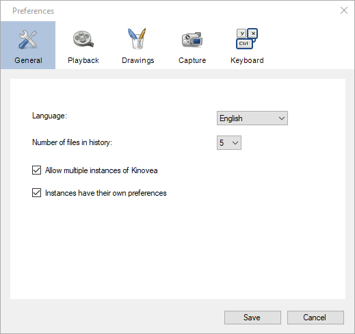

General¶
General¶
Language¶
This option lets you change the language of MotionON’s user interface.
The translations are contributed by the community. If you would like to contribute please check the translation project at Weblate.
Number of files in history¶
This options controls how many recently opened files and replay folders are remembered and listed under the menu .
Allow multiple instances of MotionON¶
When this checkbox is checked it is possible to run multiple MotionON at the same time. This can be used to record more than two cameras or play more than two videos at the same time. Each instance is identified by a name or a number.
See also: Running multiple instances of MotionON.
Note
Video synchronization does not work across different instances.
Instances have their own preferences¶
When this checkbox is checked each instance of MotionON will maintain its own preferences, independently of all other instances. This option is only available in the first instance started.